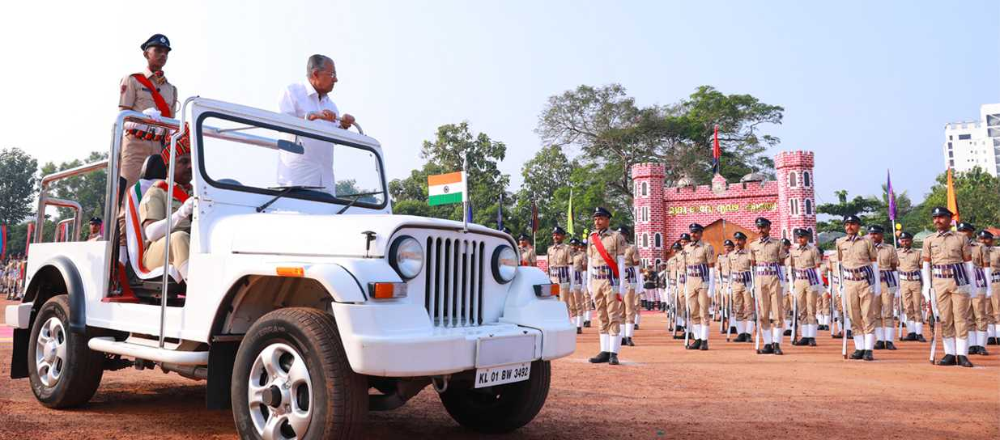
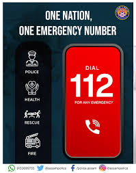

കെ എ പി ഒന്നാം ബറ്റാലിയൻ 17.11.1972 തീയതി ജി ഒ(എംഎസ്) GO (Ms) 175/72 Home dated 17/11/1972 സെൻട്രൽ റേഞ്ചിൽ തൃശ്ശൂർ ആസ്ഥാനമാക്കി ഇൻസ്പെക്ടർ ജനറലിൻറെ നിയന്ത്രണത്തിൽ കെ എ പി 1 നിയുക്തമാക്കി. കെ എ പി ഒന്നാം ബറ്റാലിയൻറെ ആദ്യ കമാണ്ടൻറ് ശ്രീ. ജി കെ മേനോൻ ആണ്. 01.07.2019 തീയതി ബറ്റാലിയൻറെ ആസ്ഥാനം......... Read More

Developed by PC 10649 Aboobacker